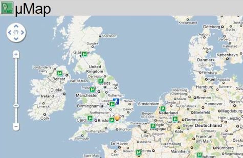

Reading #1
Systems & Complexity Questions
As requested -- if you don't have a PDF plugin, you can click to open a New Window Click the PDF file.
Diagrams
1. -- One diagram must have more than 100 elements. A computer ocean of bits.
2. -- One diagram must be something considered living. The irony of this picture but flowers and plants are considered as living things that we take for granted.
3. -- One diagram must be represent something that is not visible or physical. I'd say concept art because it's not the physical art itself that counts but the process behind the art. The thinking of it, however is not physical or visible.

4. -- One diagram must be a system based on modularity. I'd say torrent is based on modularity because if you ever try to download something on torrent NOT THAT I DO (Youtube video explained), then you will know the speed of downloading is affected by result of many people from individuals upload.
